TOOL & EQUIPMENT
Networking Tools & Equipment
TOOLS
No tools match your search.

Air Duster
Explanation: A spray can that releases compressed air to clean dust from sensitive electronics.
Function: It removes debris and dust without leaving moisture behind.
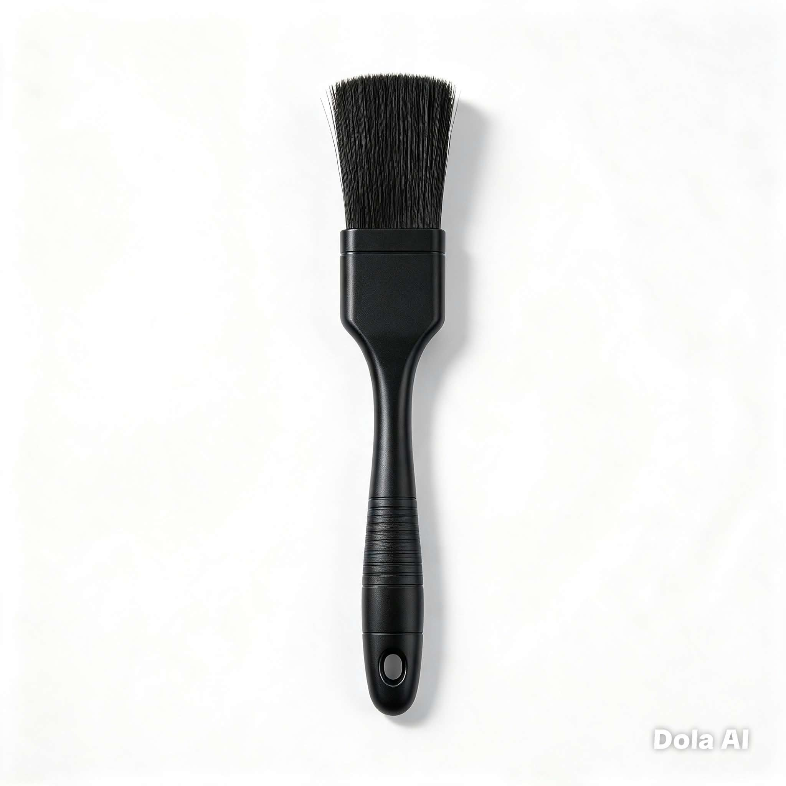
Brush
Explanation: A small cleaning brush used for delicate dusting and surface cleaning.
Function: It cleans keyboards, vents, and computer components safely.

Cable Ties
Explanation: Flexible plastic straps that secure and organize wire bundles.
Function: They keep network cables tidy and prevent tangling.

Clean Cloth
Explanation: A lint-free cloth used for wiping screens and hardware surfaces.
Function: It removes fingerprints, dust, and smudges from equipment.

Diagonal Cutting Pliers
Explanation: Diagonal cutting pliers are hand tools with sharp, angled cutting edges.
Function: They are used to cut wires, cables, and small pieces of metal.

Digital Multimeter
Explanation: A digital measuring device used for checking electrical values.
Function: It measures voltage, current, and resistance for testing circuits.

Electrical Tape
Explanation: An insulating tape made for electrical wiring and cable protection.
Function: It covers and protects exposed wires and helps secure connections.

ESD Gloves
Explanation: Gloves designed to protect electrostatic-sensitive components.
Function: They reduce the risk of electrostatic discharge while handling equipment.
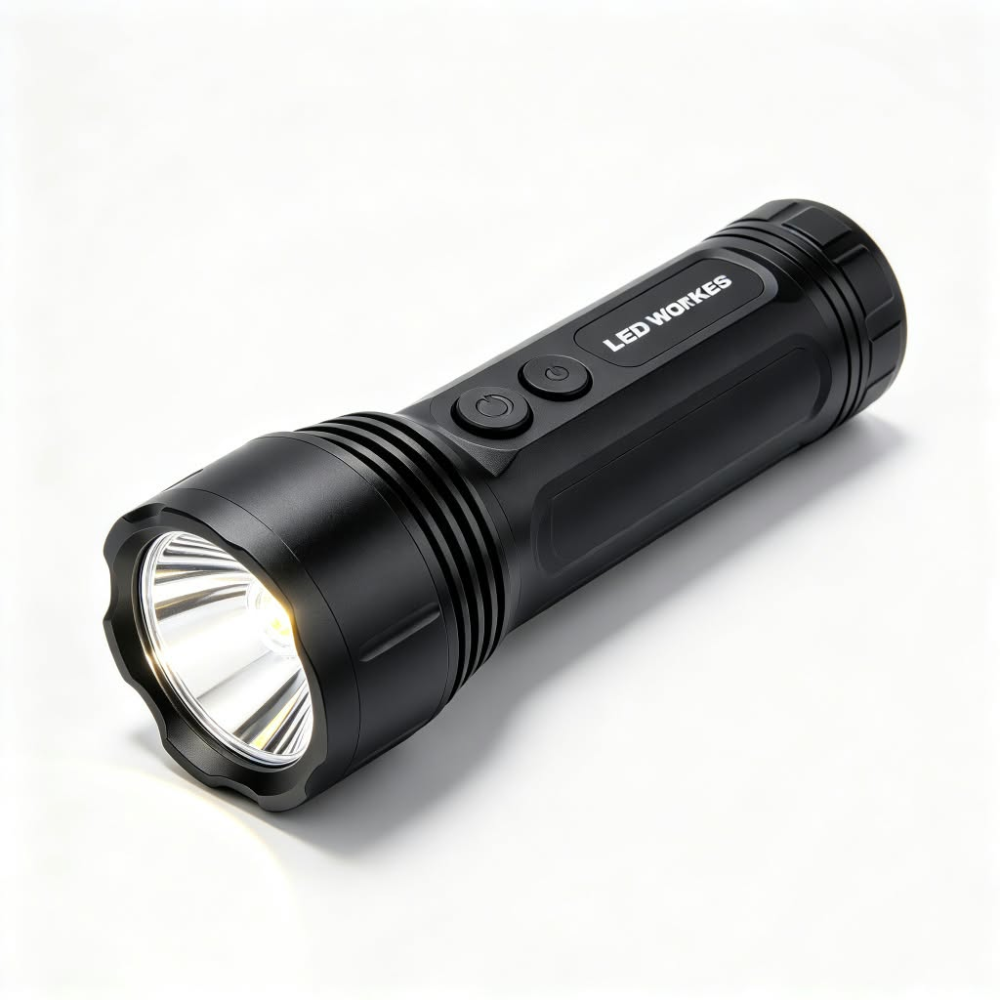
Flashlight
Explanation: A portable light source used to illuminate dark workspaces.
Function: It helps inspect cables, ports, and equipment in low-light areas.

Flathead Screwdriver
Explanation: A screwdriver with a flat, straight tip for slotted screws.
Function: It tightens or loosens flat-head screws in computers and devices.

Long-Nose Pliers
Explanation: Long-nose pliers have narrow jaws for reaching small or hard-to-access spaces.
Function: They grip, bend, and position small wires and components in tight areas.

Permanent Marker
Explanation: A marker with permanent ink used to label cables and equipment.
Function: It identifies ports, patch cords, and items during maintenance and setup.

Phillips Screwdriver
Explanation: A Phillips screwdriver uses a cross-shaped tip for Phillips-head screws.
Function: It is used to tighten or loosen screws when assembling or repairing gear.

Power Supply Tester
Explanation: A tester used to check whether a power supply is delivering proper voltage.
Function: It confirms the power output is safe and correct before use.

RJ45 Crimping Tool
Explanation: An RJ45 crimping tool is used to terminate Ethernet cables with connectors.
Function: It secures an RJ45 connector onto the cable for network connectivity.

Soldering Iron
Explanation: A handheld tool that produces heat at a metal tip for soldering.
Function: It melts solder to join wires and electronic components together.
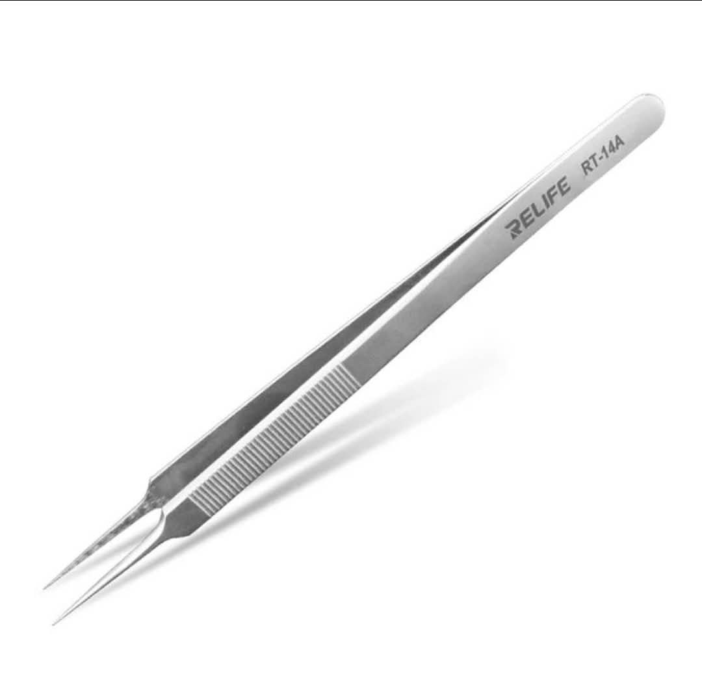
Tweezers
Explanation: Small hand tools used for gripping tiny components with precision.
Function: They help place and remove small objects during electronics repair.

Utility Knife
Explanation: A cutting tool with a retractable blade used for trimming and stripping materials.
Function: It helps cut cable insulation, tape, or packaging safely and precisely.

Wire Cutter
Explanation: A hand tool with cutting jaws made for trimming electrical and network wires.
Function: It cuts cables to length when preparing or repairing network connections.

ESD Mat
Explanation: An electrostatic-discharge protective mat used as a safe surface for sensitive electronics.
Function: It helps dissipate static charge while components are handled or repaired.

Punch Down Tool
Explanation: A spring-loaded tool that presses individual wires into insulation-displacement terminals.
Function: It terminates network cable wires in patch panels and keystone jacks.

Tape Measure
Explanation: A retractable measuring tool with a marked flexible blade.
Function: It measures cable runs and equipment placement distances.

Magnifying Glass
Explanation: A handheld optical lens that enlarges small objects and details.
Function: It helps inspect small connectors, circuit markings, and component damage.

Magnetic Pickup Tool
Explanation: An extendable magnetic tool for retrieving small metal objects from confined spaces.
Function: It picks up dropped screws and other metal parts inside equipment cases.
Electronics Repair Mat and Tool Kit
Explanation: A work mat with organized compartments and small tools for electronics repair.
Function: It protects the work surface and keeps repair tools and components organized.

Hex Key Set
Explanation: A set of L-shaped hexagonal keys in different sizes.
Function: It tightens and loosens hex-socket fasteners on equipment and workstations.

Infrared Thermometer
Explanation: A non-contact thermometer that measures surface temperature using infrared light.
Function: It checks whether computer and network equipment is overheating.

Voltage Tester
Explanation: A handheld tester that indicates the presence of electrical voltage.
Function: It checks for voltage before working around powered equipment.

Inspection Mirror
Explanation: A small mirror on an extendable handle for viewing hidden areas.
Function: It helps inspect ports, connectors, and spaces that are difficult to see directly.

Allen Wrench
Explanation: A small hex-key wrench used for tightening or loosening recessed fasteners.
Function: It helps adjust equipment panels, brackets, and mounting hardware in networking setups.
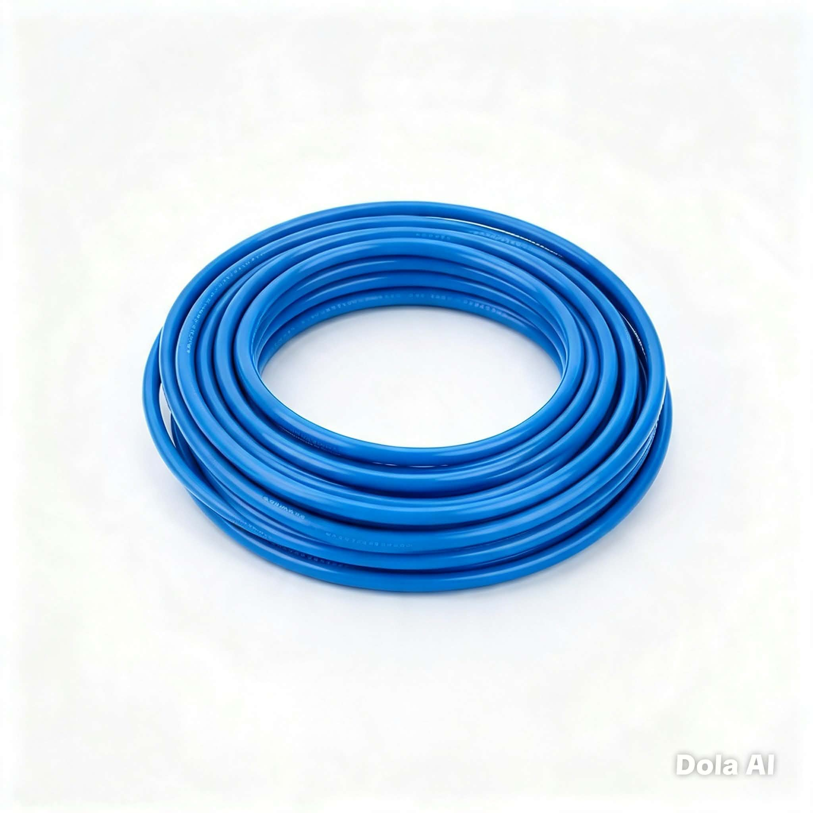
Network Cable
Explanation: A flexible cable used to carry signals between network devices and equipment.
Function: It links routers, switches, PCs, and patch panels for reliable communication.

Coaxial Cable Stripper
Explanation: A precision stripping tool designed to remove the outer jacket from coaxial cable.
Function: It prepares cable ends for connectors, adapters, and termination tasks.

Digital Test Pen
Explanation: A compact probe used for testing live electrical circuits and cable continuity.
Function: It checks for power presence and helps verify electrical connections safely.

Network Cable Tester
Explanation: A tester that verifies the wiring and continuity of network cables.
Function: It diagnoses cable faults, shorts, and miswires before installation or repair.

Nut Driver
Explanation: A hand tool with a hollow socket used to turn nuts and threaded fasteners.
Function: It secures rack screws, brackets, and hardware during equipment installation.

Antistatic Wrist Strap
Explanation: A strap worn on the wrist to safely discharge static electricity before handling electronics.
Function: It protects sensitive components from electrostatic discharge during repair or setup.

Pass-through RJ45 Crimping Tool
Explanation: An RJ45 crimping tool designed for pass-through connectors used in Ethernet cabling.
Function: It trims and secures pass-through connectors for clean cable terminations.

Power Extension
Explanation: A flexible power cable that extends the reach of an electrical outlet.
Function: It supplies power safely to test benches, routers, switches, and workstations.
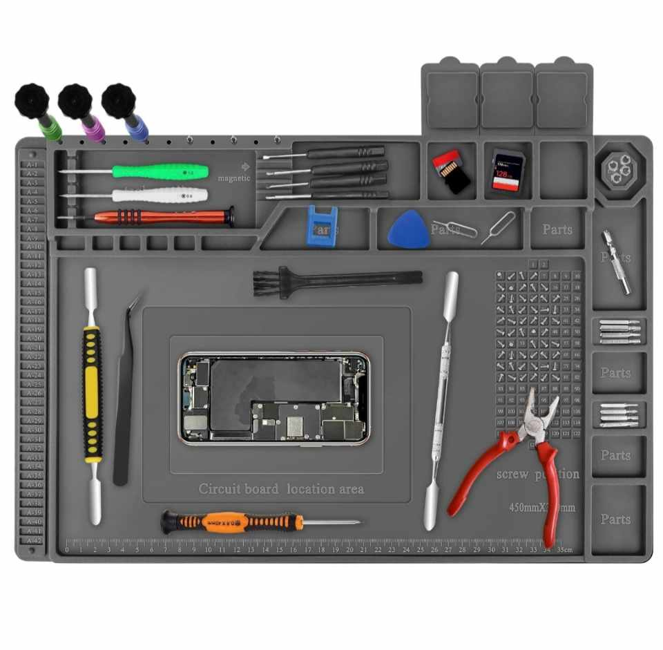
Networking Tool Kit
Explanation: A collection of hand tools and accessories used for computer and network maintenance.
Function: It keeps common tools together for installation, troubleshooting, and repair work.

Power Supply Tester
Explanation: A tester used to check whether a computer power supply is delivering the correct voltages.
Function: It helps verify power output before connecting a supply to computer equipment.
EQUIPMENT
No equipment matches your search.
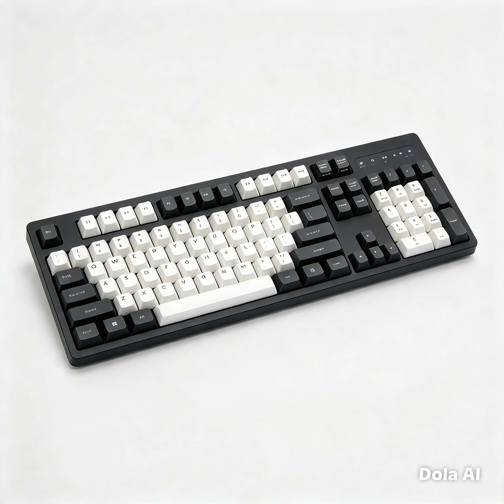
Keyboard
Explanation: An input device used to type commands and data into a computer system.
Function: It helps users operate and configure networking equipment and software.
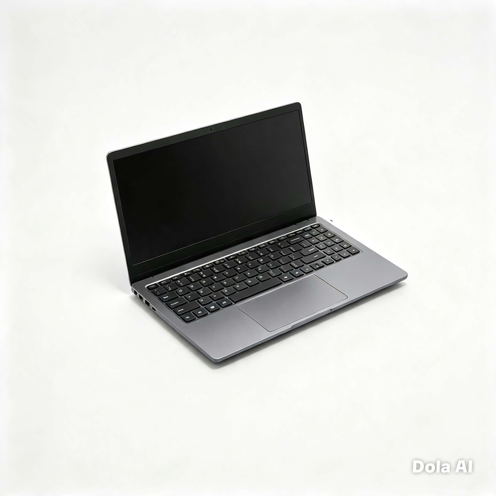
Laptop
Explanation: A portable computer used for configuration, troubleshooting, and management.
Function: It runs diagnostic software and network tools for testing and repair.
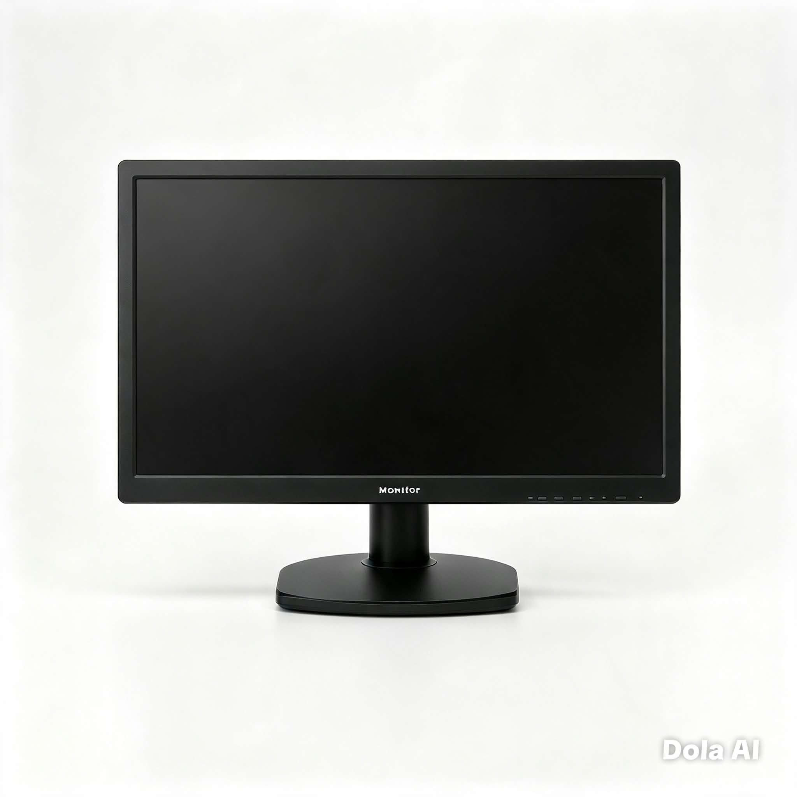
Monitor
Explanation: A display device that shows the output of a computer or network device.
Function: It allows technicians to view configuration screens and system status.
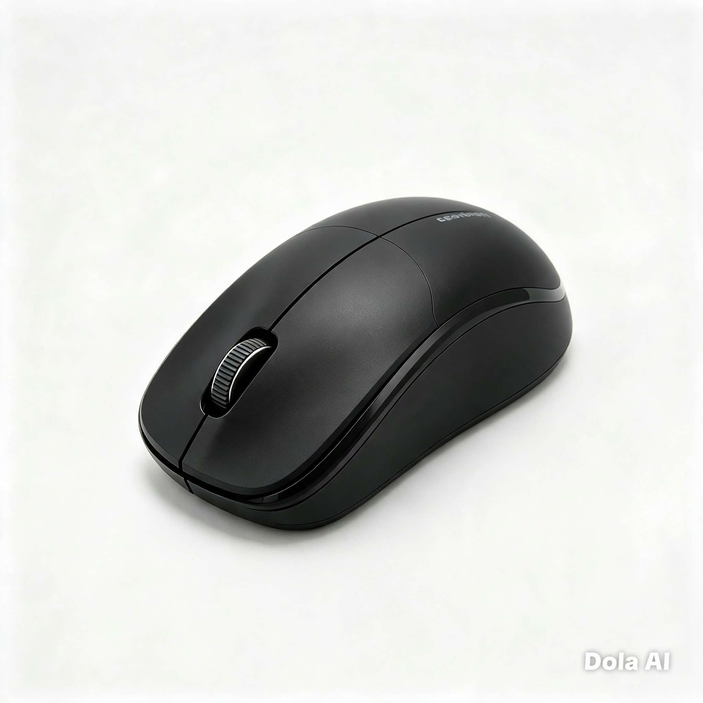
Mouse
Explanation: A pointing device used to control the cursor on a computer screen.
Function: It helps navigate GUI-based network configuration and diagnostic tools.
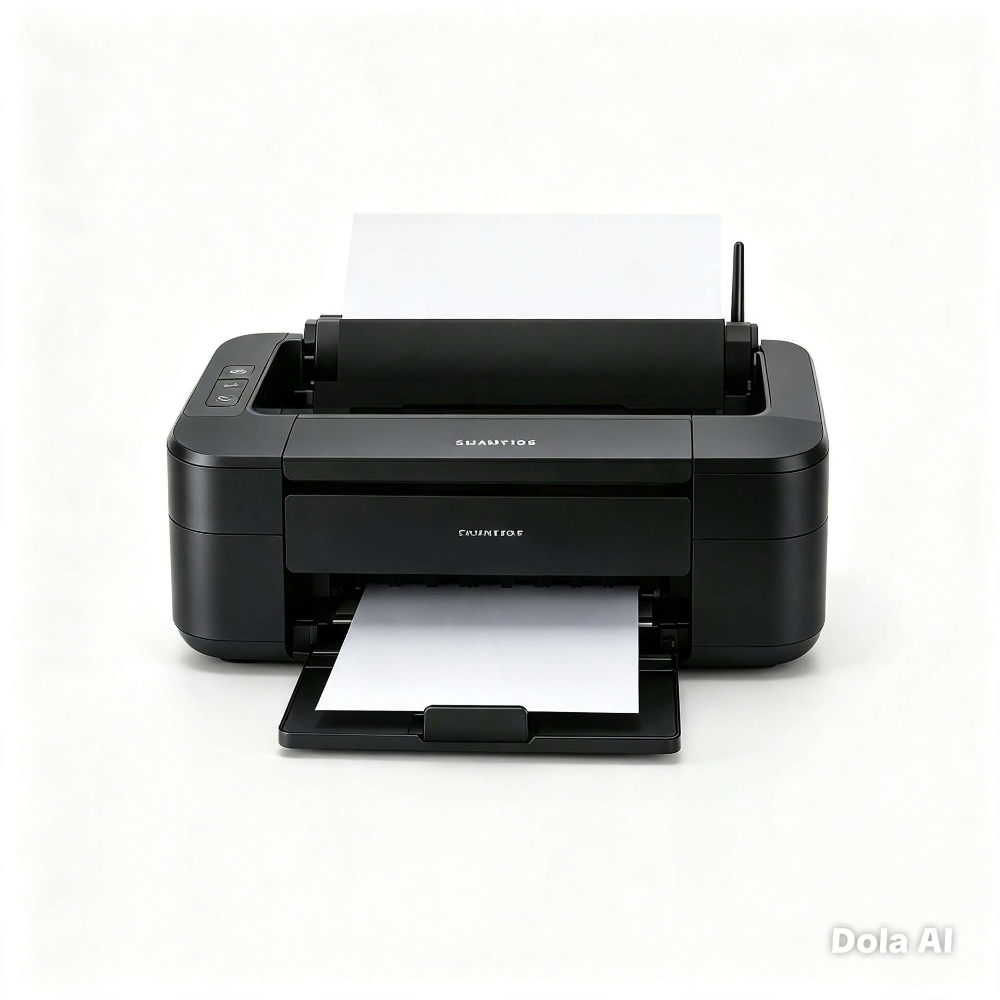
Printer
Explanation: A device that produces printed output from digital documents or labels.
Function: It prints reports, labels, and configuration sheets used in networking work.
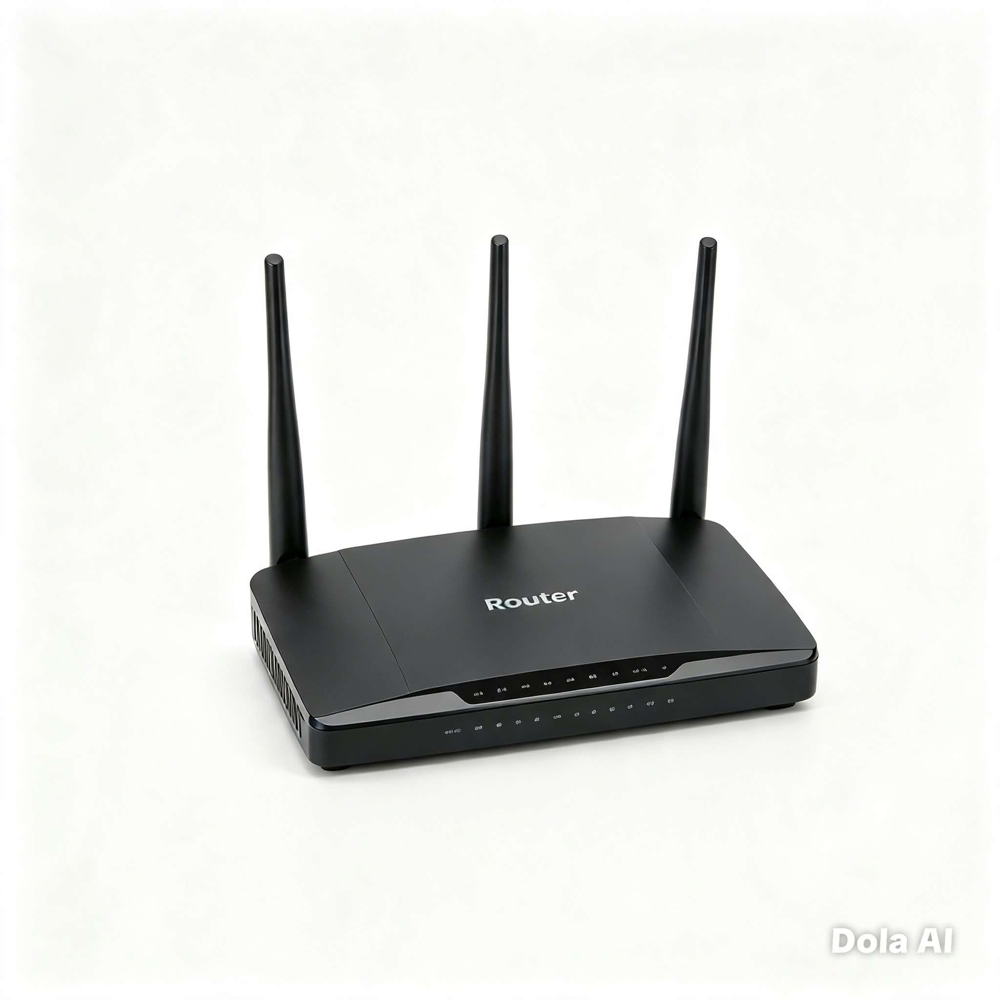
Router
Explanation: A network device that directs data between computers and connected networks.
Function: It routes internet traffic and manages connectivity for local devices.
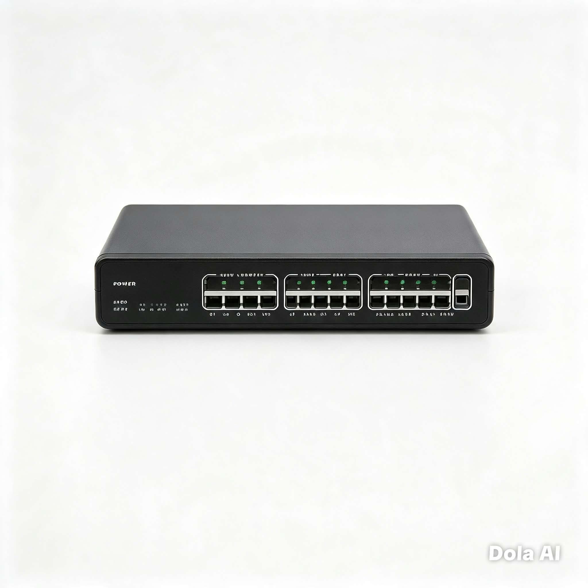
Switch
Explanation: A network switch connects multiple devices within the same local network.
Function: It forwards data between devices and helps manage network traffic.

Ethernet Cable
Explanation: A twisted-pair network cable with RJ45 plugs on both ends.
Function: It connects computers, routers, and switches to a wired network.
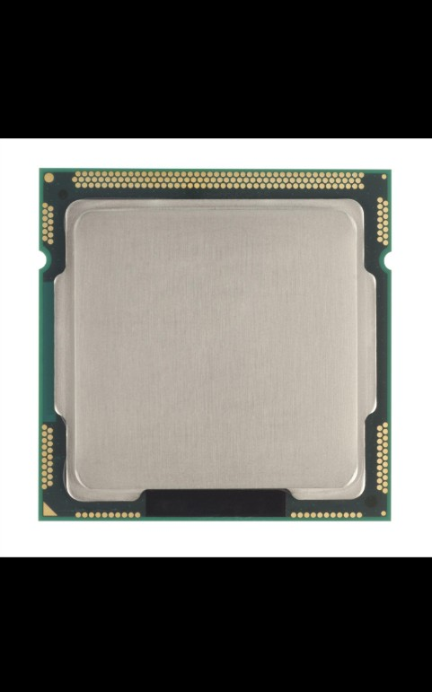
CPU
Explanation: The central processing unit is the main processor inside a computer.
Function: It executes instructions and processes data for the computer and its network applications.

Flash Drive
Explanation: A portable USB storage device that uses flash memory.
Function: It transfers files, drivers, and configuration backups between computers.
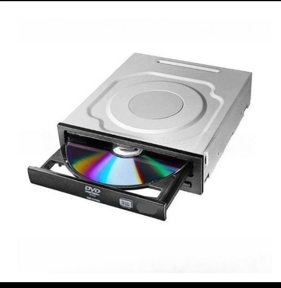
Optical Disc Drive
Explanation: A computer drive that reads and writes optical discs such as CDs and DVDs.
Function: It reads installation media and archived files stored on discs.
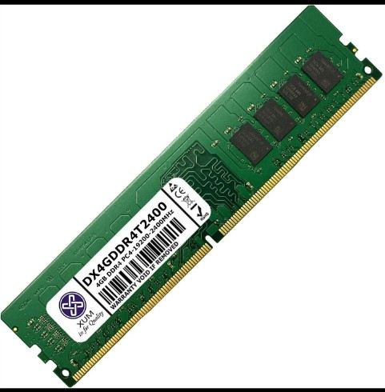
RAM
Explanation: Random-access memory is the computer's short-term working memory.
Function: It temporarily stores data and instructions used by running programs.

RJ45 Connector
Explanation: An eight-contact modular plug fitted to the end of Ethernet cable.
Function: It connects twisted-pair network cable to computers, switches, and routers.

Multimedia Projector
Explanation: A projector used to display visuals from a laptop or media source on a larger screen.
Function: It presents training slides, diagrams, and network diagnostics during meetings or classroom demos.

UPS (Uninterruptible Power Supply)
Explanation: A backup power unit that keeps equipment running during brief outages or voltage dips.
Function: It protects routers, switches, and computers from power interruptions and shutdowns.
%20jpg.jpg)
Compact Disc (CD)
Explanation: An optical disc used to store digital files and software.
Function: It can distribute drivers, installation media, and archived data.

Cisco Firewall
Explanation: A network security device that monitors and filters traffic between networks.
Function: It helps control access to a network and protect connected devices from unwanted traffic.

Desktop Computer
Explanation: A stationary computer used for everyday computing and network administration.
Function: It runs network configuration, monitoring, and troubleshooting software.

Graphics Tablet
Explanation: An input device that lets a user draw or write with a stylus on a touch-sensitive surface.
Function: It supports drawing diagrams, annotating technical documents, and other computer input tasks.

Headphones
Explanation: An audio output device worn over or in the ears.
Function: It lets a technician listen to audio alerts, calls, and training material from a computer.

Memory Card
Explanation: A small removable flash storage card for digital devices.
Function: It stores and transfers files, device data, and configuration backups.

Multimedia Projector
Explanation: A projector that displays computer or media output on a large screen.
Function: It presents training material, diagrams, and network information to a group.
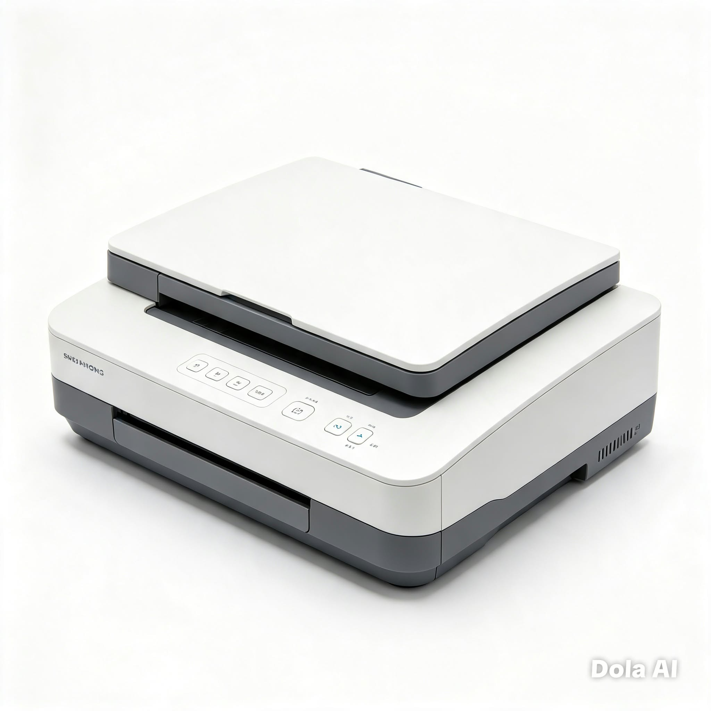
Document Scanner
Explanation: A device that converts paper documents and images into digital files.
Function: It digitizes equipment records, diagrams, and printed documentation.

Smart Board
Explanation: An interactive display that combines a digital screen with whiteboard controls.
Function: It supports collaborative lessons, presentations, and demonstrations of network concepts.
.jpg)
Smartphone
Explanation: A mobile computing device with wireless networking and communication features.
Function: It can test wireless connectivity and provide access to network support tools.
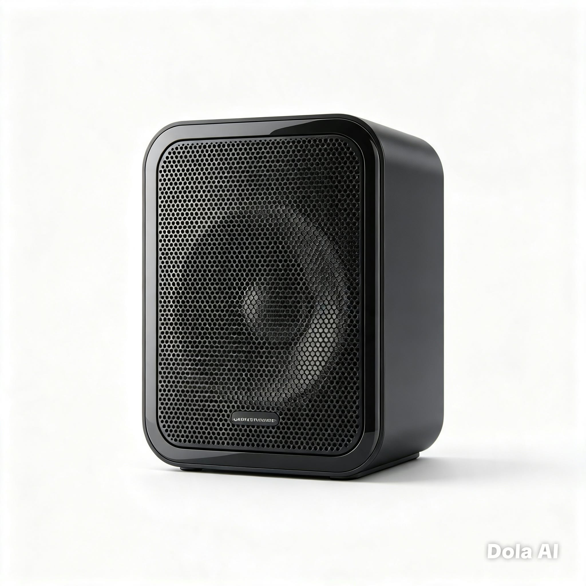
Speaker
Explanation: An audio output device that converts an electrical signal into sound.
Function: It plays alerts, calls, and other audio from a computer or connected device.